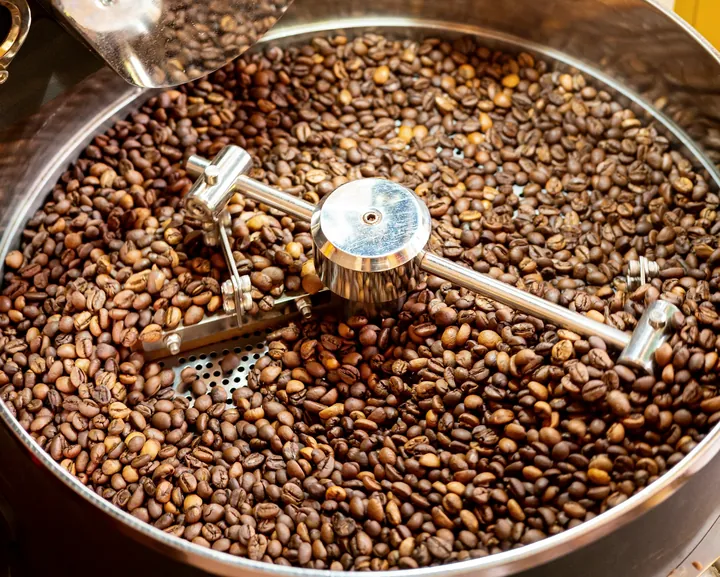
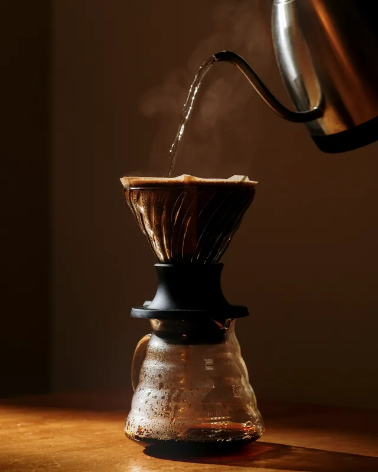
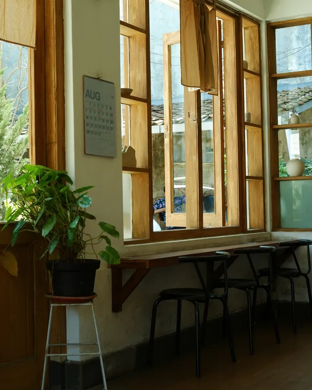
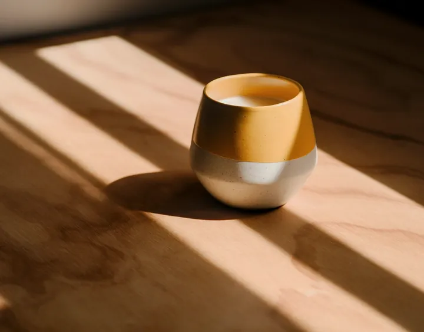
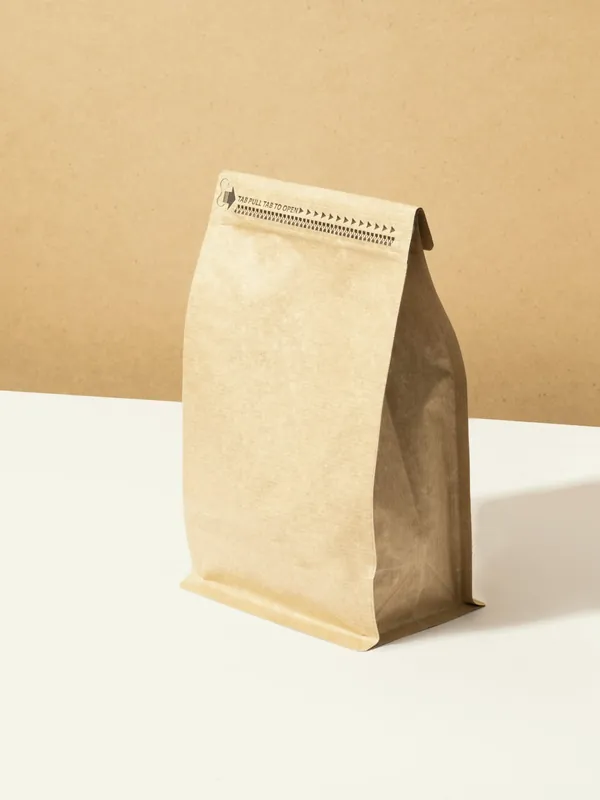

はじめての方へ
来る前に気になることを、先にまとめました。
- 席
- 14席窓ぎわのカウンター5席と、テーブル9席。全席禁煙
- 電源・Wi-Fi
- どちらもあります電源は窓ぎわに5口。土日祝の10〜13時は、作業は1時間ほどで
- 駐車場
- 店の裏に3台満車のときは、向かいのコインパーキングへ
- 持ち帰り
- 飲み物は全部できます店内と同じ値段です。焼き菓子と豆も
- お子さま連れ
- どうぞ、ごいっしょに段差なし・ベビーカーのまま入れます。子ども椅子1脚、おむつ替えのできる化粧室
- ペット
- 店先のベンチなら2席。お水の器をお出しします。店内は補助犬のみ
- 予約
- いりません6名さまからは、前の日までにお電話をください
- ご注文
- レジで先にお会計席までお運びします。Wi-Fi の合言葉も、そのときに
- お支払い
- 現金・カード・電子マネー交通系IC、PayPay などのQRコード決済も
- おかわり
- 二杯目は200円引き同じ豆でも、ちがう豆でも
- 混む時間
- 土日祝の10時〜13時平日の朝は、窓ぎわの席がたいてい空いています
- 目印
- 白い壁に、木の窓東向きの大きな窓と、入口の木の札が目印です

開ける前の朝に、
1キロの釜で焼きます
朝の6時半、店の奥の小さな焙煎機に火を入れます。一度に焼けるのは1キロまで。二、三日あとに足りなくなりそうな豆を、色と、はぜる音を見ながら、開ける前に一回か二回焼きます。
焼いた豆は、二日ほど休ませてからお出ししています。少し落ち着かせたほうが、香りがまるくなるからです。お品書きの焼きの色の帯は、焼き上がりの豆の色に近づけて塗っています。
店主・焙煎 見本 まどか（架空）

窓ぎわの5席は、
午前中がいちばん明るい
窓は東を向いています。朝の8時から11時ごろまでは、テーブルの奥まで光が届きます。ひとりで本を読む方、パソコンを開く方は、こちらの席が落ち着くと思います。
カップは、近くの窯で焼いてもらった物です。形も色も少しずつちがうので、お好きな物を選んでください。



豆の持ち帰り
今週の豆とブレンドは、どれも100gから量り売りしています。袋には、焼いた日と焼きの色を書いた札を貼ります。焼いてから二週間ほどのうちに、飲みきるのがおすすめです。
- 量
- 100g・200g（200g は100円引き）
- ひき方
- 豆のまま／ペーパーのドリップ用／フレンチプレス用
- 選ぶとき
- 迷ったら、ひと口ずつ味見ができます
- 贈り物
- 紙の箱に入れて、包みます（無料）
- 取り置き
- 前の日までにお電話をいただければ、ご用意しておきます
- 送ること
- 今は、店頭だけでお分けしています
営業日と時間
朝8時から、夕方6時まで。ご注文は5時半までです。祝日も、曜日のとおりに開けます（月曜の祝日はお休み）。
臨時のお休み
- 11月26日（木） 焙煎機の点検のため
- 12月30日（水）〜1月3日（日） 年末年始
見本の説明：臨時のお休みは、この一覧に日付と理由を決まった形で1行足すだけです。その日の2週間前から最初の画面の「今日」の欄にお知らせが出て、当日は「今日はお休み」と出ます。過ぎた日の行は、自動で見えなくなります。曜日と時刻は、日本の時刻で見ています。
| 月 | お休み |
|---|---|
| 火 | 8:00〜18:00第3火曜はお休み |
| 水 | 8:00〜18:00 |
| 木 | 8:00〜18:00 |
| 金 | 8:00〜18:00 |
| 土 | 8:00〜18:00 |
| 日 | 8:00〜18:00 |
場所と駐車場
- 住所
- 〒000-0000
見本県見本市見本町2-3-4（架空） - 車で
- 大通りの「見本町二丁目」の信号を北へ。すぐ左の、店の横の細い道を奥へ進むと、裏の駐車場です
- 駐車場
- 店の裏に3台（「あさまど 1〜3」の札）満車のときは、向かいのコインパーキング（30分100円）をお使いください
- 電車
- 見本駅の東口から、歩いて8分
- バス
- 「見本町二丁目」で降りて、すぐ前
- お電話
- 054-000-00008:00〜18:00。混んでいて出られないときは、こちらから折り返します。見本のため架空の番号です
よくあるご質問
ひとりでも入りやすいですか
お客さまの半分くらいは、おひとりです。窓ぎわのカウンターが、ひとりで座りやすい席です。
電源のある席は、どこですか
窓ぎわのカウンター5席の、机の下にあります。平日は時間の決まりはありません。窓ぎわが埋まっているときは、空いたらお声をかけます。
子ども用の椅子は、取り置きできますか
1脚だけなので、来る前にお電話をいただければ、空けておきます。
豆だけ買いに寄ってもいいですか
はい。レジで豆をお選びください。ひくのに3分ほどかかります。前の日までにお電話をいただければ、ご用意しておきます。
コーヒーが苦手でも楽しめますか
ほうじ茶ラテと和紅茶は、町の茶園のお茶でいれています。カフェインを抜いたコーヒーもあります。
食べ物のアレルギーが気になります
トースト・焼き菓子・プリン・チーズケーキには、小麦・卵・乳を使っています。くわしくは、ご注文のときにお聞きください。
貸し切りはできますか
平日の18時からなら、10名さままでお受けしています。ひと月前までに、お電話でご相談ください。